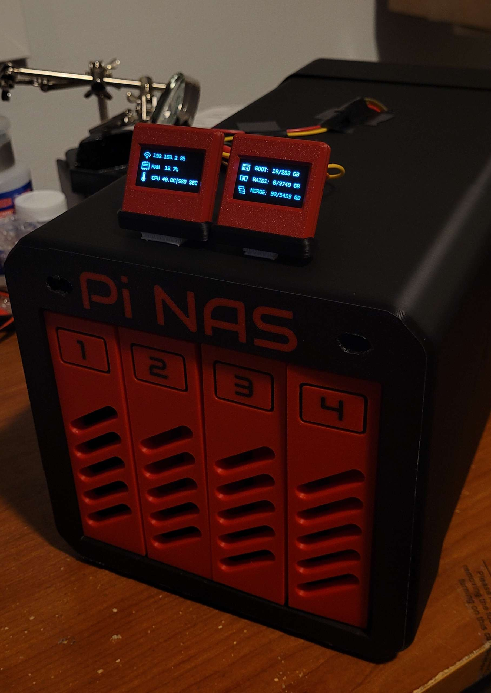

raid1_important
Two 3 TB WD Red NAS drives operate as a mirrored RAID 1 volume for documents and other important files. The mirrored layout prioritizes redundancy if either disk fails.
Home Lab · Storage · Self-Hosted
A compact four-bay home server built around a Raspberry Pi 5. It combines resilient document storage, high-capacity media storage, containerized services, remote Grafana monitoring, and live hardware telemetry in a customized enclosure.

Running 64-bit Raspberry Pi OS.
Connects and powers the Pi, four hard drives, and displays.
Split between resilient files and higher-capacity media.
Storage, filesystems, shares, and system administration.
Dedicated solid-state boot storage in an external USB enclosure.
Isolated, maintainable services for the home media stack.
Remote visibility into system, storage, thermal, and network health.
Quiet active airflow across the Pi and hard drives.
Custom enclosure printed in red and black PLA.
Two 3 TB WD Red NAS drives operate as a mirrored RAID 1 volume for documents and other important files. The mirrored layout prioritizes redundancy if either disk fails.
The other two 3 TB drives are combined as a larger media-oriented pool. It trades redundancy for usable capacity where the stored content is less critical and can be replaced.
Docker keeps the media services isolated and repeatable. Sonarr and Radarr organize series and movies, while qBittorrent handles downloads alongside the supporting services in the wider arr stack.
Two top-mounted LCDs surface the server's IP address, CPU and RAM load, CPU and SSD temperatures, boot-drive usage, and storage utilization. The displays connect through the system's hardware headers and make routine checks possible without opening a dashboard.
A self-managed WireGuard VPN gives enrolled phones, laptops, and other devices an encrypted route back into the home network. This makes NAS files and internal services available remotely without exposing them directly to the public internet.
WireGuard clients use the self-hosted Pi-hole instance for DNS resolution, extending network-level ad and tracker filtering to connected devices even when they are away from home.
A custom Grafana dashboard provides remote visibility into the NAS without relying on the enclosure displays. It tracks CPU utilization, clock speed and temperature; RAM usage; SSD and hard-drive capacity, throughput and thermals; plus Ethernet and wireless network activity.
Michael Klements' enclosure design was fabricated on a Bambu Lab P1S with AMS, using red and black PLA for the drive bays and chassis. Custom display housings bring the two telemetry screens into the finished build. The result packages the compute, storage, power delivery, cooling, and status displays into a single desktop unit instead of leaving the build as exposed development hardware.
The physical enclosure STL files and the baseline four-bay Raspberry Pi 5 build are based closely on Michael Klements' project for The DIY Life. His guide covers the enclosure design, drive trays, SATA mounting, power routing, assembly, and initial OpenMediaVault setup.
Read Michael Klements' original guideRAID improves availability, but it is not a backup. Important files on the mirrored volume should still be copied to a separate device or off-site destination.